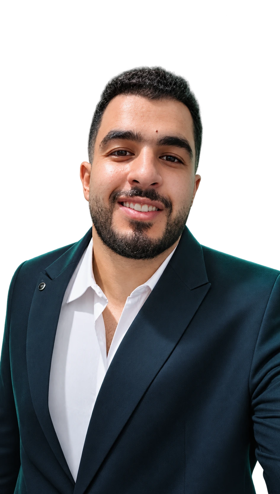

إيوان للبرمجيات
عبد الرحمن
المؤسس والرئيس التنفيذي
عبد الرحمن
بدوي
نفهم شغلك.
ونبني اللي يسهّله.
أنا عبد الرحمن، مؤسس إيوان. أتابع معك الفكرة من أول نقاش لحد ما تبقى نظام يسهّل الشغل على فريقك.


من شغل متفرّق،
لنظام واحد واضح.
في الفلاح، جمعنا الحضور والتعاميم ومتابعة ولي الأمر في مكان واحد.

شغل متفرّقنربط الخطواتنظام يسهّل يومك
خلفية Full Stack
- Angular
- .NET / C#
- TypeScript
- SQL Server
- Docker
EF Core · REST APIs · JWT · SOLID · CQRS
الدراسة
هندسة الإلكترونيات والاتصالات
كلية الهندسة · جامعة المنصورة
التدريب التقني
- HUAWEI